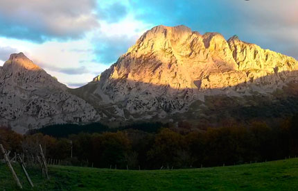
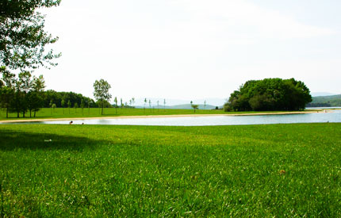

El entorno
Perteneciente a Guipúzcoa y enclavada estratégicamente entre Vizcaya y Álava, Leintz-Gatzaga se asienta en el Valle de Léniz, en la comarca de Alto Deba, centro geográfico del País Vasco.
Que visitar

Parque Natural de Aizkorri-Aratz
Guipúzcoa, Escoriaza

Santuario de Aránzazu
Guipúzcoa, Oñate

Parque Natural de Urkiola
Vizcaya, Urkiola

Parque Natural del Gorbea
Vizcaya, Areatza

Embalse de Ullíbarri-Gamboa
Álava, Landa

Vitoria, Álava
Que hacer
A menos de 1 km:
- Visitas guiadas
- Deportes de Frontón
- Senderismo
- Montañismo
A 5 km:
- Paseos a caballo
- Bicicleta de montaña
- Escalada
- Deportes acuáticos
- Puenting
- Rappel
- Espeleología
- Pesca
- Golf
- Parapente
- Venta de queso